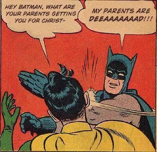

Batman Slapping Robin, also known as "My Parents Are Dead," is an exploitable image of the DC Comics superhero Batman slapping his protégé Robin in mid-conversation. Taken from a comic book published in 1965, the single-panel illustration has inspired a series of parodies featuring custom-captioned speech bubbles on 4chan, Reddit and elsewhere.
According to the Comics Should Be Good Archive, the panel originated from the 1965 comic book "World’s Finest #153." The story is based around an alternate reality in which Batman believes that Superboy and Superman are responsible for the death of his father.
The earliest known parody of the panel was submitted to the image-sharing website SFWChan[3] on June 10th, 2008, in which the speech bubble text is changed to have Robin ask Batman what his parents got him for Christmas (shown below), to which Batman responds with a slap while yelling "my parents are dead!!" (shown below)
